FoodLuck MEO 操作説明書 14
店舗ページ限定機能
インサイト補足、飲食店メニュー、AI運用アシスタント、競合分析、順位変動アラートを使うための現場マニュアル
| この資料の目的 店舗ページ限定機能は、通常の投稿・写真・クチコミ返信より一段進んだ運用確認をするための機能です。飲食店の現場では、毎日触る機能というより、月次の振り返り、メニュー更新、競合確認、AI診断の確認に使います。 |
|---|
| 操作前の注意 飲食店メニューは登録内容がGoogleビジネスプロフィールへ反映されます。競合分析の設定、AI診断の実行、順位変動の確認は閲覧中心ですが、登録ボタンを押す操作は反映内容を確認してから行ってください。 |
|---|
1. 店舗ページ限定機能の全体像
このカテゴリには、店舗単位で詳しく見るための補助機能がまとまっています。日々の運用では、まず投稿、写真、クチコミ返信、店舗基本情報を整え、その次にこのカテゴリで数字や競合、AI診断を確認すると使いやすくなります。
| 機能 | 何を見る・操作するか | 飲食店での使い方 | 注意点 |
|---|---|---|---|
| インサイト補足 | Googleマップ表示、検索後の行動、文字化け対応 | 数字の意味を理解して月次で振り返る | 詳しい分析はインサイト資料と併用 |
| 飲食店メニュー | メニュー追加、価格、説明、写真、食事制限対応 | Googleに表示されるメニューを整える | 登録内容は外部表示に反映 |
| AI運用アシスタント | GBP運用状況をAIが診断し改善提案を出す | 月1回の運用点検に使う | 診断は1店舗1日1回まで |
| クチコミ感情分析 | クチコミをポジティブ、普通、ネガティブで確認 | 不満の傾向や強みを把握する | AI判定は参考情報として見る |
| 競合分析 | 順位、クチコミ、文章・写真、投稿を競合と比較 | 近隣店との差を見て改善点を探す | 登録後すぐ全データは出ない |
| 順位変動アラート | 前日から順位が大きく変わったキーワードを確認 | 急な順位低下を早めに見つける | 1日だけで判断しすぎない |
2. インサイト補足を確認する
店舗ページ限定機能内のインサイト記事では、Googleビジネスプロフィールで見られる数値の意味や、CSV文字化けの直し方が説明されています。FoodLuck MEO上のインサイト画面と合わせて読むと、数字の見方が分かりやすくなります。
- MAPでの閲覧ユーザー数は、Googleマップ内の検索結果で店舗ピンが表示された回数です。
- 急にMAP表示回数が増えた場合、近隣施設、イベント、季節要因などで検索・表示機会が増えた可能性があります。
- Googleビジネスプロフィール側では、閲覧ユーザー数、検索語句、通話、予約、ルート、Webサイトクリックなどを確認できます。
- ダウンロードしたCSVが文字化けする場合は、メモ帳で開き、文字コードをANSIにして保存し直すと改善することがあります。
FAQ画像: MAPでの閲覧ユーザー数の考え方
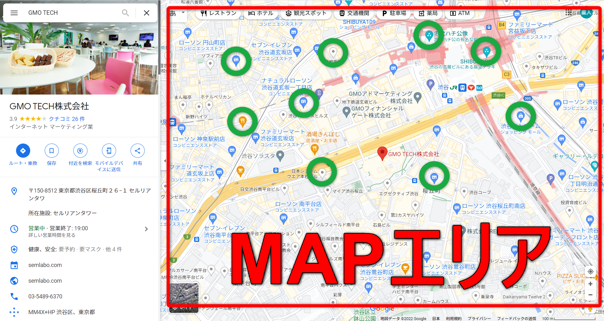
- 赤枠のMAPエリアに店舗ピンが表示されると、MAPでの閲覧ユーザー数としてカウントされます。
- 表示回数は来店数ではなく、お客様の画面に出た回数です。
| 現場での見方 インサイトは、数字単体よりも前月比、キャンペーン実施月、季節イベント、近隣環境の変化とセットで見ます。数字が上がった理由、下がった理由を店舗の出来事と照らし合わせると、次の投稿や写真更新に活かしやすくなります。 |
|---|
3. 飲食店メニューを更新する
飲食店メニューでは、Google上に表示されるメニュー情報をFoodLuck MEOから更新できます。メニュー名、価格、説明、画像、食事制限対応を整えることで、検索・マップでお店を見たお客様に内容が伝わりやすくなります。
3-1. 個店でメニューを登録する
- 左メニューから「Googleデータ連携」>「Googleビジネスプロフィール」>「飲食店メニュー」を開く。
- メニューカテゴリー名を入力する。例: ランチ、ディナー、コース、ドリンク。
- メニュー名、価格、説明、掲載画像を入力する。
- 該当する場合は、ベジタリアン、ビーガンなど食事制限対応を設定する。
- 同じカテゴリーにメニューを追加する場合は、メニュー追加を押す。
- 内容を確認し、画面下部の「登録する」を押す。
- 登録後に順番を変える場合は、画面右上の上下矢印マークから並び替える。
FAQ画像: 個店の飲食店メニュー入力画面
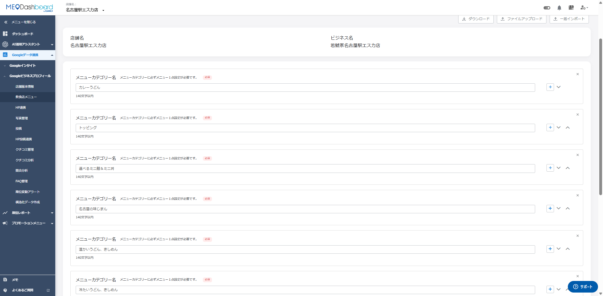
- 必須項目はカテゴリー名とメニュー名です。
- 価格、説明、写真まで入れると、検索したお客様が来店前に内容を判断しやすくなります。
3-2. グループで複数店舗のメニューを更新する
- 「飲食店メニューテンプレート」をダウンロードする。
- 店舗一覧シートで、更新対象の店舗名とシート名を確認する。
- 更新不要な店舗は行ごと削除する。非対応店舗一覧は削除不要。
- 各店舗シートに、メニューカテゴリー、メニュー名、価格、説明、画像ファイル名などを入力する。
- 画像を使う場合は、Excelに記載した画像ファイル名と実際の画像ファイル名を一致させる。
- 先に画像をFoodLuck MEOへアップロードする。
- 画像ライブラリでアップロード結果を確認する。
- 最後に作成したExcelをインポートして更新する。
FAQ画像: グループ更新用テンプレートと店舗一覧
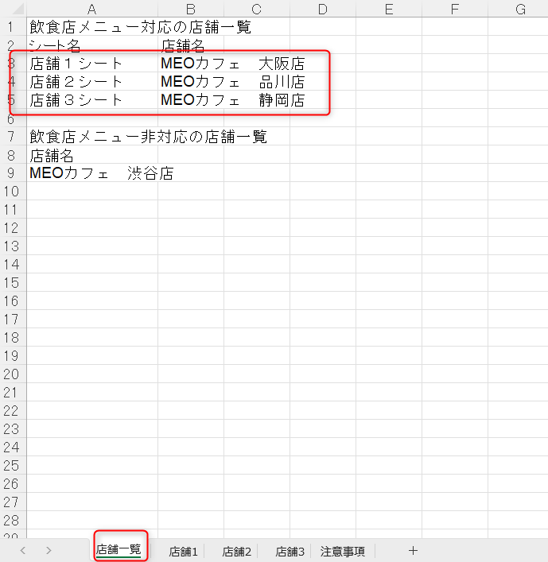
- 対応店舗一覧に載っている店舗だけが更新対象です。
- Excelに残した店舗・メニューが更新対象になります。不要な店舗や不要なメニューの扱いに注意します。
FAQ画像: グループで画像をアップロードする画面
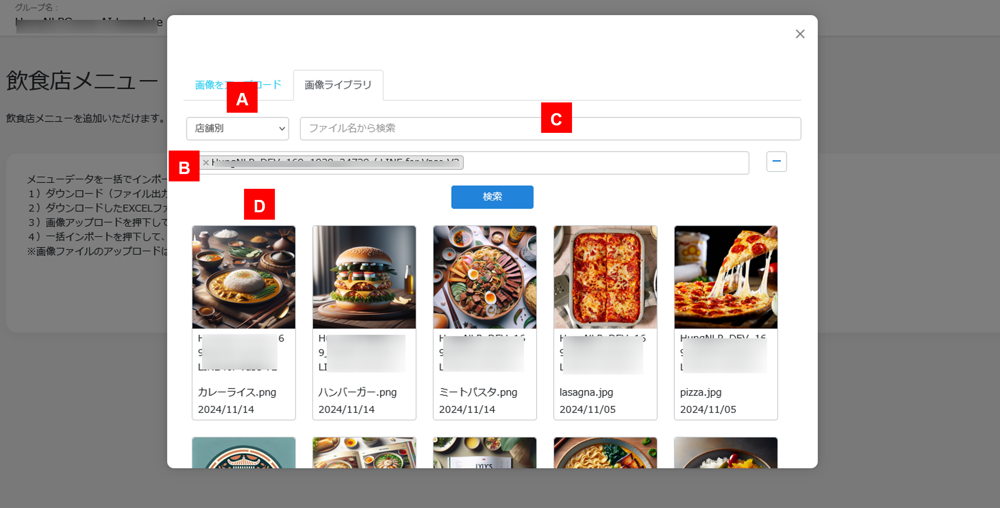
- Excelに記載した画像ファイルを先にアップロードします。
- 対象店舗が正しいかを確認し、更新しない店舗は外します。
| 重要: メニュー更新の反映 FoodLuck MEOで登録した飲食店メニューは、Googleビジネスプロフィールへ反映されます。通信状況によりタイムラグが出る場合がありますが、メニュー名、価格、画像、削除対象は登録前に必ず確認してください。Excelに記載されていない既存メニューは、インポート時に削除処理になる可能性があります。 |
|---|
4. AI運用アシスタントを使う
AI運用アシスタントは、Googleビジネスプロフィールの運用状況をAIが診断し、改善提案を出す機能です。投稿、写真、クチコミ返信、店舗情報などが整っているかを確認する月次チェックとして使うと便利です。
- 左メニューから「AI運用アシスタント」>「新規」を開く。
- 「Googleビジネスプロフィール運用」を選ぶ。
- 個店の場合は2〜3分ほど待つと診断結果が表示される。
- グループの場合は全店舗分の抽出に時間がかかるため、右上のベルマーク通知を確認する。
- 結果一覧で総合評価と各項目の診断内容を確認する。
- 必要に応じて、個店はPDF、グループはXLSXまたは店舗別PDF ZIPをダウンロードする。
| 評価 | 点数の目安 | 現場での受け止め方 |
|---|---|---|
| 優 | 80%以上100%以下 | 基本運用は良好。さらに写真・投稿・クチコミ返信を伸ばす |
| 良 | 60%以上80%未満 | 大きな不足は少ない。未対応項目を月内に整える |
| 可 | 50%以上60%未満 | 改善余地が多い。優先順位を決めて着手する |
| 不可 | 50%未満 | まず店舗基本情報、写真、投稿、クチコミ返信から整える |
FAQ画像: AI運用アシスタントの診断結果イメージ
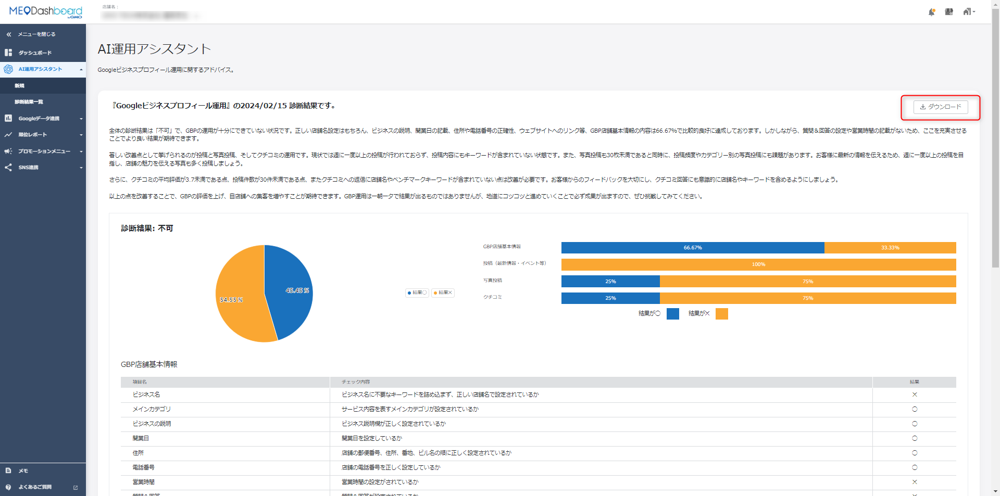
- 総合評価だけで終わらせず、どの項目が弱いかを確認します。
- 診断は1店舗につき1日1回までです。再診断は24時間後に行います。
FAQ画像: グループ診断のダウンロード
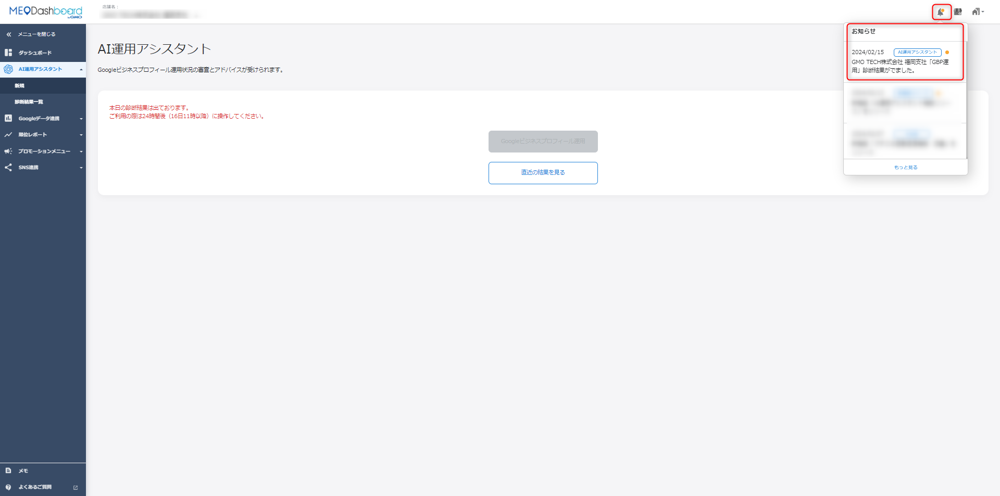
- グループでは全体一覧のXLSXと、店舗別PDFのZIPをダウンロードできます。
- 複数店舗を運営している場合は、低評価店舗から優先して改善します。
| クチコミ返信のキーワード判定 AI運用アシスタントでは、クチコミ返信文に店舗名や計測キーワードが入っているかも判定します。判定基準となるキーワードは、Dashboardに登録されている計測キーワードです。全体の返信文のうち50%以上に該当キーワードが含まれているかが目安になります。 |
|---|
5. クチコミ感情分析を見る
クチコミ感情分析は、投稿されたクチコミ内容をAIが読み取り、ポジティブ、普通、ネガティブの3分類で傾向を見る機能です。ひとつのクチコミだけで判断するのではなく、どんな不満や褒め言葉が多いかをまとめて把握するために使います。
- 判定は毎日6回、5時、8時、11時、14時、17時、20時に処理されます。
- クチコミが入ってすぐ画面に出ない場合でも、次回処理後に反映されることがあります。
- ネガティブが増えた時は、返信文だけでなく、料理提供、接客、待ち時間、価格説明など現場要因も確認します。
- AI判定は参考情報です。実際の文面を読み、店舗としての改善点に落とし込みます。
FAQ画像: クチコミ感情分析の画面
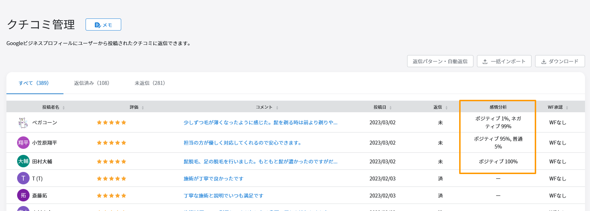
- ポジティブ、普通、ネガティブの比率を見て、クチコミ全体の傾向を把握します。
- ネガティブ比率が高い月は、該当クチコミを開いて原因を確認します。
6. 競合分析を設定・確認する
競合分析は、近隣や同業態の競合店舗と自店舗を比較する機能です。順位、クチコミ、ビジネス文・写真、投稿の4つを見て、どこを改善すべきかを考えます。
6-1. 競合店舗を設定する
- 画面右上のビルマークから「設定」>「店舗」を開く。
- 対象店舗名を押して店舗ページへ進む。
- 左上の「競合店舗」を押し、設定画面を開く。
- ベンチマークしたい競合店舗を最大3店舗まで入力する。
- 比較するキーワードを設定する。設定可能数は通常の順位計測キーワード数と同数です。
- 検索エリアを市区町村または緯度経度で設定する。ピンを手動で動かすこともできます。
- 内容を確認し、「登録する」を押す。
FAQ画像: 競合分析の設定画面
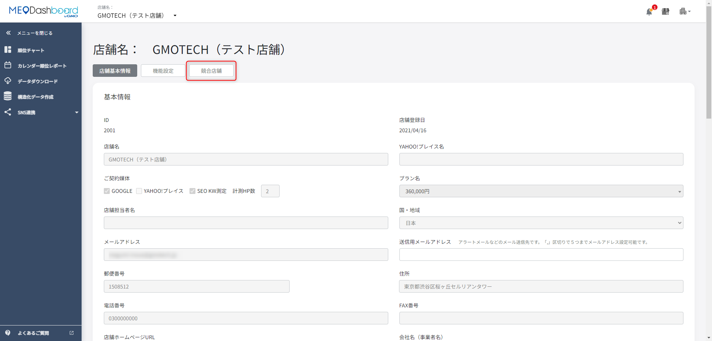
- 競合店舗は3店舗まで設定できます。
- 店名だけでなく、住所や電話番号も確認して、別店舗を登録しないようにします。
FAQ画像: 検索エリアのピン設定
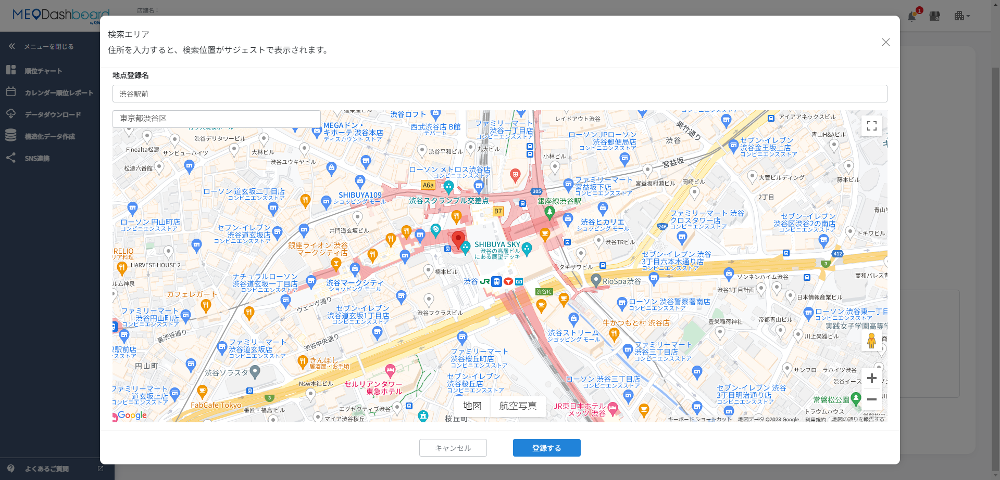
- 検索エリアは市区町村または緯度経度で設定します。
- 店舗周辺の実際の商圏に近い場所へピンを合わせると、実感に近い順位を見やすくなります。
6-2. 競合店舗のGoogle URLを取得する
- Googleで「競合の店舗名 + 住所または地域名」を検索する。
- 検索結果右側、またはスマホ上部に表示される店舗情報を確認する。
- 店舗情報の「共有」ボタンを押す。
- 共有画面で「クリックしてリンクをコピー」を押す。
- FoodLuck MEOの競合設定画面にコピーしたURLを貼り付ける。
FAQ画像: 競合店舗の共有URL取得
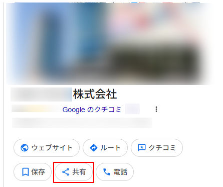
- 同名店舗を間違えないよう、住所や地域名を入れて検索します。
- GoogleマップやGoogle検索に表示された正式な店舗情報から共有URLを取得します。
| 登録直後にデータが出ない時 競合分析はリアルタイムではなく、項目ごとに決まった曜日・時間で取得されます。登録直後に空欄が多くても不具合とは限りません。全データが揃う目安は、登録を行った翌週火曜日以降です。 |
|---|
6-3. 競合分析で見る4つの画面
| 画面 | 見ること | 更新頻度 | 改善につなげる視点 |
|---|---|---|---|
| 順位比較 | 自店舗と競合のGoogleマップ順位 | 1日1回13時 | どのキーワードで負けているかを見る |
| クチコミ比較 | 平均点、件数、累計・単月 | 毎週火曜11時 | 件数差が大きければ依頼導線を強化する |
| ビジネス文・写真比較 | 説明文内のキーワード、写真枚数 | 文章は水曜11時、写真は週1回 | 説明文と写真量で見劣りしていないか見る |
| 投稿比較 | 直近6ヶ月の投稿数と投稿内容 | 毎週木曜11時 | 競合のキャンペーンや発信頻度を見る |
FAQ画像: 競合の順位比較
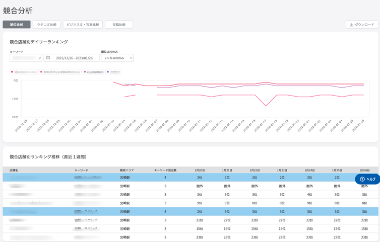
- 上部の折れ線グラフと下部の表で、自店舗と競合の順位推移を確認します。
- 1日だけでなく、数週間単位で傾向を見ます。
FAQ画像: 競合のクチコミ比較
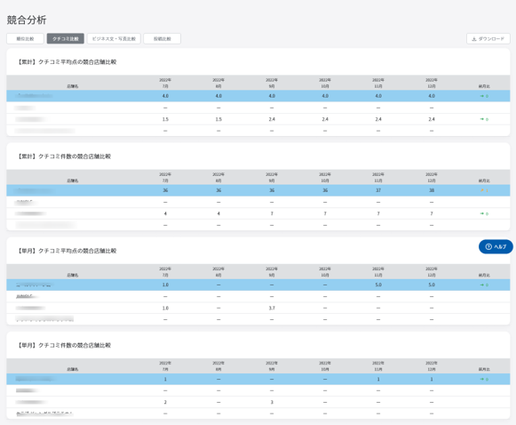
- 直近36ヶ月以内のクチコミをもとに比較します。
- Google上の全期間クチコミ件数とFoodLuck MEO上の件数が違うことがありますが、仕様による差です。
FAQ画像: 競合の投稿比較
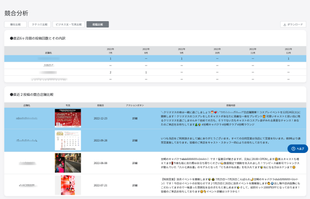
- 直近6ヶ月の投稿数と直近投稿内容を確認します。
- 競合がイベントや特典を多く出している時は、自店舗の投稿頻度も見直します。
7. 順位変動アラートを見る
順位変動アラートは、前日からキーワード順位に大きな変化があった場合に確認する機能です。メニューにびっくりマークが出ている時は、どのキーワードが上がったか、下がったかを確認します。
- 3位以内、10位以内に入ったキーワードを確認できます。
- 1位から5位の間でプラス変動、マイナス変動があったキーワードを確認できます。
- 2ページ目以降に下がったキーワード、圏外になったキーワード、圏外から戻ったキーワードを確認できます。
- 10位から30位の間で5位以上変化したキーワードも確認対象です。
| 順位変動の見方 アラートは異変に気づくための入口です。1日の変動だけで判断せず、店舗情報の変更、投稿、写真、クチコミ、競合動向と合わせて確認します。 |
|---|
8. 飲食店の月次チェックリスト
□ メニュー価格、メニュー名、写真が現場の最新内容と合っている
□ 季節メニューや終了したメニューがGoogle上に残っていない
□ AI運用アシスタントを実行し、不可・可の項目を確認した
□ クチコミ感情分析でネガティブ傾向が増えていないか確認した
□ 競合分析で、自店舗が負けているキーワードやクチコミ件数差を確認した
□ 競合の投稿頻度や特典内容を確認し、自店舗の投稿計画に反映した
□ 順位変動アラートが出ているキーワードを確認した
□ CSV文字化けやデータ反映遅れなど、判断に迷う内容はFoodLuck側へ確認した
| 現場で大切な考え方 このカテゴリの機能は、毎日細かく触るより、月に1回の振り返りで使うと効果的です。数字やAI診断を見て終わりではなく、写真を増やす、投稿を出す、クチコミ返信を整える、メニュー情報を正すなど、実際の改善に落とし込むことが大切です。 |
|---|
9. この資料に反映したFAQ記事
| No. | FAQ記事 | 本文での反映先 |
|---|---|---|
| 1 | 「MAPでの閲覧ユーザー数」とは | 2. インサイト補足 |
| 2 | インサイトデータの文字化けについて | 2. インサイト補足 |
| 3 | Googleビジネスプロフィールから確認できるインサイト項目 | 2. インサイト補足 |
| 4 | インサイトについて | 2. インサイト補足 |
| 5 | 【個店】飲食店メニューの更新方法 | 3. 飲食店メニュー |
| 6 | 【グループ】飲食店メニューの更新方法 | 3. 飲食店メニュー |
| 7 | AI運用アシスタント機能：クチコミ返信におけるキーワード判定の仕様 | 4-5. AI運用・感情分析 |
| 8 | 【グループ】AI運用アシスタント機能について | 4-5. AI運用・感情分析 |
| 9 | AI運用アシスタント機能の使用方法 | 4-5. AI運用・感情分析 |
| 10 | クチコミ感情分析機能 | 4-5. AI運用・感情分析 |
| 11 | 競合分析機能：Googleビジネスプロフィール（GBP）URLの確認・取得方法 | 6. 競合分析 |
| 12 | 競合分析機能：競合店舗を登録したのにデータが反映されない場合 | 6. 競合分析 |
| 13 | 競合分析機能の概要 | 6. 競合分析 |
| 14 | 競合分析機能 設定方法 | 6. 競合分析 |
| 15 | 競合分析機能①：順位比較 | 6. 競合分析 |
| 16 | 競合分析機能②：クチコミ比較 | 6. 競合分析 |
| 17 | 競合分析機能③：ビジネス文・写真比較 | 6. 競合分析 |
| 18 | 競合分析機能④：投稿比較 | 6. 競合分析 |
| 19 | 順位変動アラートについて | 7. 順位変動アラート |